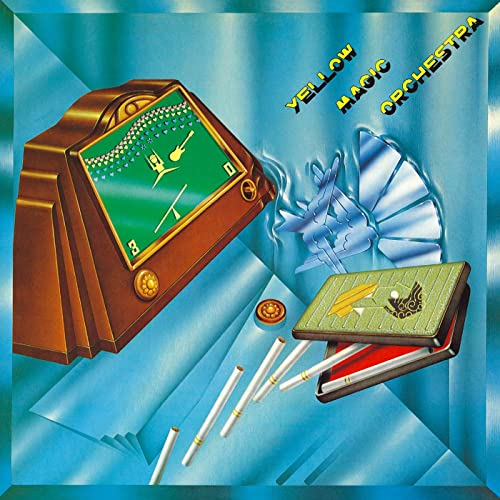

Julian's Secret Domain - Music Reviews
Back to music reviews
Yellow Magic Orchestra - s/t (1978)
synthpop
I utterly adore this band. Their brand of chirpy synthpop sends me into irresistible fits of panicked fidgets. Every time I listen to first-song-proper Firecracker it feels like the most important song in the world. Essential listening!
4/5